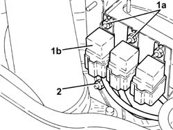
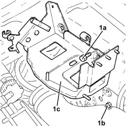
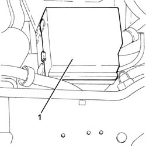
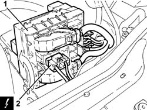
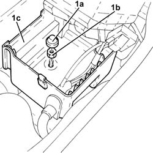
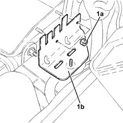
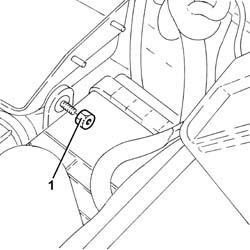
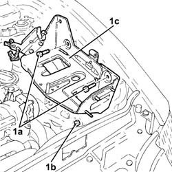

5530B52 BATTERY DRIP TRAY/SUPPORT - R.R.
- Path
- Procedures > 55 ELECTRICAL EQUIPMENT > 5530 CURRENT GENERATOR > 5530B BATTERY AND LEADS > 5530B52 BATTERY DRIP TRAY/SUPPORT - R.R.
- Kind
- repair procedure (removal / refitting; the operation number is the code)
- Applies to
- all engines; all production periods
- Interactive page
- https://sloeber94.github.io/elrnDB-aGt/en/#/125001644
Applies to: engines: 3.2 V6; all production periods
 Removing
Removing
 Refitting
RefittingProceed with removal
1. Undo the bolts (1a) and move the relays (1b) away from the battery drip tray.
2. Undo the nut fixing the air filter to the battery drip tray.

Applies to: engines: 3.2 V6; all production periods
1. Undo the bolts (1a), slacken the bolt (1b) and remove the battery drip tray (1c).

Applies to: engines: 3.2 V6; all production periods
Refitting
RemovingRefit the battery cage in its seating and fix it with its bolts.
Tighten the nuts fixing the air filter to the battery drip tray.
Replace the relays in their seats on the battery case and secure with nuts.
Proceed with refitting
Applies to: engines: 1.8 T.SPARK, 2.0 JTS; all production periods
Removing
RefittingProceed with removal
Op. 1048A59 PIPE from flow meter to throttle casing hose - R.R.
Applies to: engines: 1.8 T.SPARK, 2.0 JTS, 1.9 JTD 16V; all production periods
Refitting
RemovingRefit the battery cage in its seating and fix it with its bolts.
Secure the electrical wiring to the fastenings ont the battery drip tray.
Tighten the nuts fixing the air filter to the battery drip tray.
Place the engine compartment junction unit casing mounting in its housing and secure it using the nuts.
Place the engine compartment junction unit casing in its housing and fasten it using the nut.
Place the plug back in position.
Place the engine compartment junction unit in its housing securing it to the hinges.
Connect the electrical connection to the engine compartment junction unit and rotate it in its housing.
Place the engine compartment junction unit cover in position.
Proceed with the refitting
Applies to: engines: 1.8 T.SPARK, 2.0 JTS; all production periods
Proceed with removal
Op. 1048A59 PIPE from flow meter to throttle casing hose - R.R..
Applies to: engines: 1.8 T.SPARK, 2.0 JTS, 1.9 JTD 16V; all production periods
Proceed with removal
1. Remove the cover for the junction unit in the engine compartment.

Applies to: engines: 1.8 T.SPARK, 2.0 JTS, 1.9 JTD 16V; all production periods
1. Rotate the engine compartment junction unit.
2. Disconnect the electrical connection from the engine compartment junction unit.
Name | Connector | |
|---|---|---|
2 | Engine compartment junction unit | See B1E ENGINE COMPARTMENT JUNCTION UNIT ( CROSSMEMBER ) |
Release the engine compartment junction unit from the hinges and move it to the side.

Applies to: engines: 1.8 T.SPARK, 2.0 JTS, 1.9 JTD 16V; all production periods
1. Remove the plug (1a), undo the nut (1b) and remove the engine compartment junction unit casing (1c) to the side.

Applies to: engines: 1.8 T.SPARK, 2.0 JTS, 1.9 JTD 16V; all production periods
1. Undo the nuts (1a) and remove the engine compartment junction unit casing support (1b).

Applies to: engines: 1.8 T.SPARK, 2.0 JTS, 1.9 JTD 16V; all production periods
1. Undo the nut fixing the air filter to the battery drip tray.

Applies to: engines: 1.8 T.SPARK, 2.0 JTS, 1.9 JTD 16V; all production periods
Release the electrical wiring from the fastenings on the battery drip tray.
1. Undo the bolts (1a), slacken the bolt (1b) and remove the battery drip tray (1c).

Topics linked from this page (2)
Topics that link to this page (57)
- 0010T62 POWER STEERING FLUID CHECK LEVEL AND TOP UP IF NECESSARY
- 0010T67 HYDRAULIC CLUTCH SYSTEM BLEED AIR
- 1004B10 POWER UNIT WITH MANUAL GEARBOX - R + R
- 1004B24 POWER UNIT WITH MANUAL GEARBOX WITH HYDRAULIC SELECTION - R R
- 1016D20 LEFT CYLINDER HEAD – R.R. AND REPLACING GASKET
- 1020D26 FLYWHEEL SIDE OIL SEAL COVER - R+R
- 1020D36 FLYWHEEL END OIL SEAL - REPLACE FOR MANUAL GEARBOX WITH HYDRAULIC SELECTION VERSIONS
- 1020D38 FLYWHEEL SIDE OIL SEAL - REPLACE
- 1020D51 CRANK SHAFT REAR MOUNT - APPLY SILICONE TO MATING SURFACES
- 1024B10 ENGINE FLYWHEEL - R + R FOR VERSIONS WITH MANUAL GEARBOX
- 1024B11 ENGINE FLYWHEEL - R R FOR MANUAL GEARBOX WITH HYDRAULIC SELECTION VERSIONS
- 1048A10 AIR CLEANER FILTERING ELEMENT - REPLACE
- 1048A52 AIR INLET PIPE TO TURBO CHARGER - R + R
- 1060G10 FLOW METER - R R
- 1080C80 EXHAUST GAS WATER HEAT EXCHANGER FOR EGR VALVE R R
- 1088B20 ENGINE COOLING RADIATOR - R + R
- 1088C40 THERMOSTAT- R + R
- 1088D24 RIGID PIPE FOR COOLANT INLET TO WATER PUMP - R + R
- 1088E10 RADIATOR COOLING FAN - R + R
- 1810A20 CLUTCH - R + R
- 1810A28 CLUTCH - R R FOR MANUAL GEARBOX WITH HYDRAULIC SELECTION VERSIONS
- 1820A24 THRUST BEARING LINKAGE - R + R
- 1820B20 MASTER CYLINDER (PUMP) - R + R
- 1820B30 SLAVE CYLINDER - R + R
- 1820B40 HOSE FROM CLUTCH RESERVOIR TO MASTER CYLINDER (PUMP) - R + R
- 1820B54 HOSE FROM DAMPER - R R
- 1820B58 CLUTCH HYDRAULIC CIRCUIT VIBRATION DAMPER - R+R
- 1820B59 SMORZATORE DI VIBRAZIONI CIRCUITO IDRAULICO FRIZIONE CON TUBAZIONI ENTRATA E USCITA - S.R.
- 2110A10 MANUAL GEARBOX AND DIFFERENTIAL - R + R
- 2110A11 MANUAL GEARBOX WITH DIFFERENTIAL - R R FOR VERSIONS WITH HYDRAULIC SELECTION
- 2110C22 GEAR INPUT SHAFT SEALS - R R
- 2110C24 SEALS FOR GEARBOX INPUT SHAFT - R R FOR MANUAL GEARBOX WITH HYDRAULIC SELECTION VERSIONS
- 2110C50 GEAR SELECTION AND ENGAGEMENT UNIT - R R
- 2125C70 GEARBOX/BRAKE LEVER MOUNT - R R
- 2127C20 PIPE FROMPUMP TO HYDRAULIC SPEED SELECTION ACTUATOR UNIT - R R
- 2127C22 PIPE FROM HYDRAULIC SPEED SELECTION ACTUATOR UNIT TO FLUID RESERVOIR - R R
- 2127C40 HYDRAULIC SPEED SELECTION HYDRAULIC ACTUATOR UNIT AND CLUTCH - R R
- 2127E40 HYDRAULIC SELECTION GEARBOX SPEED SELECTION POSITION SENSOR - R R
- 2127E42 HYDRAULIC SELECTION GEARBOX SHIFT POSITION SENSOR - R R
- 2127E44 HYDRAULIC SELECTION GEARBOX CLUTCH POSITION SENSOR - R R
- 2127E50 HYDRAULIC SELECTION GEARBOX CIRCUIT PRESSURE SENSOR - R R
- 3330D02 BRAKE SERVO/BRAKE PUMP ASSEMBLY - R R
- 3340A12 ABS HYDRAULIC AND ELECTRONIC CONTROL UNIT
- 3340A13 ABS CENTRAL MOUNT - R R
- 3340A20 ABS ELECTRONIC CONTROL UNIT - R+R
- 3340B55 CENTRAL BRAKE PIPE TO LH - R R
- 3340B56 RIGID PIPE FROM HYDRAULIC CONTROL UNIT TO RIGHT FRONT BRAKE - R.R.
- 3340B62 REAR CONNECTION CENTRAL PIPE - R R
- 3350A30 ASR TO CONTROL UNIT - R R
- 4130A10 POWER STEERING BOX - R+R - CHECK TOW-IN IF NECESSARY SEPARATELY - INCLUDES BLEEDING
- 4130B49 RETURN PIPE FROM POWER STEERING CASE TO HEAT EXCHANGER PIPE R R
- 4130B70 TUBAZIONE INTERMEDIA DI RITORNO TRA SCATOLA SERVOSTERZO E SCAMBIATORE DI CALORE/RADIATORE RAFFREDDAMENTO LIQUIDO SERVOSTERZO - S.R.
- 4130B72 RETURN PIPE FROM POWER STEERING CASE TO POWER STEERING FLUID RESEVIOR R R
- 4130B82 RETURN PIPE BETWEEN RIGID INTERMEDIATE RETURN PIPE TO FLUID RESEVIOR R R
- 5510C46 FLYWHEEL SIDE KNOCK SENSOR - R+R
- 5510C48 TIMING SIDE KNOCK SENSOR - R+R
- 5530A10 ALTERNATOR - R+R